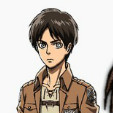
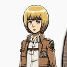

动漫作品《进击的巨人》中的女主角，艾伦·耶格尔的青梅竹马，在儿时被艾伦救过一条命。无家可归时被艾伦父子带回了家，后二人经常一起活动，互相视对方为最重要的人。 由于身为耶格尔家养女之故，与艾伦经常一起行动。流着东洋人血统，是个沉默寡言、表情稀少的少女，与阿明·阿诺德也是旧识，小时候曾居住在同一个地区，三个人关系很要好。以第104期训练兵团首席的身份毕业，性格沉稳冷静，有以一敌百的战斗力。与艾伦一同加入调查兵团，并且参与作战。和东人清美有亲族关系（三笠的母方的血统）。
| 艾伦·耶格尔 | 阿明·阿诺德 | 利威尔·阿克曼 |
|---|---|---|
|  |  |
年幼的三笠原本也有一个与其他人一样美好的家庭，父亲母亲是分别拥有阿卡曼血统和东洋人血统的农民 ，一家三口和和睦睦的生活着。然而人贩却看上了三笠一家，在搏斗中三笠的父母均被杀害，自己则被劫持 。随后前来会诊的格里沙·耶格尔和他的儿子艾伦·耶格尔发现三笠一家遭劫。怒不可遏的艾伦独自前往人贩的据点，杀死了其中两名人贩，就在他们即将逃出生天之时，艾伦却被最后一名人贩所劫持，千钧一发之际艾伦激发了三笠的战斗潜质，三笠鼓起勇气杀死了他，救下了艾伦，两人最终逃出生天。 失去父母的三笠无家可归，格里沙便让三笠跟着他们生活，艾伦将自己的红围巾赐予了三笠，从此三笠便成为了艾伦家的一份子。
成为家人后的几年，三笠无时无刻不照顾着艾伦，并在他的身后保护他。每当艾伦做傻事的时候，她都会跟在后面，因为身手不凡，因此同年龄的孩子见到三笠都会感到非常害怕。那一天，三笠与往常一样砍完柴并找到了熟睡中的艾伦，随后却意外的发现艾伦正在默默地哭泣，之后再艾伦的再三叮嘱下，三笠表示会替他保密。在回去的途中，他们遇到了正在值班的汉尼斯以及归来的调查兵团，回到家中后立刻告知了艾伦的母亲卡尔菈·耶格尔艾伦想要加入调查兵团的事情，结果艾伦母子俩为此吵得不可开交。之后艾伦一怒之下冲出家门，三笠紧跟在艾伦身后，在见到正在欺负阿明·阿诺德的一行人，并成功将他们吓跑。在交谈后的不久，众人便遭到了巨人的袭击，慌忙中三笠跟着艾伦回到家的位置，并试图将被房梁压住的卡尔菈救出，却被赶来的汉尼斯阻止并带走。之后两人被迫坐上了逃离的船只离开了那里。
新兵毕业，三笠以毕业生第一名的成绩获得了加入宪兵团的机会，但却为了艾伦放弃了这次机会，并对他说“要是我不在你身边你一定会死的” 。但就在第二天的准备时，超大型巨人突然来袭，三笠本想在艾伦身边保护他，但却收到了疏散群众的任务不得不与他分开，在疏散的过程中，艾伦阵亡。在之后得知消息的三笠失去了以往的冷静，大量消耗瓦斯向巨人发起了进攻，却无奈瓦斯用尽摔在地上，陷入绝境，正当她即将被巨人吃掉时，被巨人化的艾伦所救才得以脱险。随后众人利用巨人化的艾伦的掩护成功脱离，在巨人化消失后三笠才发现那个巨人是艾伦本人，顿时激动地飞了出去，抱住昏迷的艾伦痛哭失声。但这一切在其他人眼中却完全不同，驻扎兵团队长奇兹·威尔曼在艾伦巨人化被人类知晓后第一时间率领驻屯兵团将艾伦、三笠和阿明团团围住，并厉声质问艾伦是人类还是巨人。在无法确信艾伦没有威胁情况下下令炮击，三笠挺身保护艾伦，却被巨人化的艾伦用手挡住了飞来的榴弹，之后和艾伦、阿明一起商议对策，最终驻屯兵团司令多托·匹西斯及时赶来，阻止了奇兹·威尔曼的愚蠢行为。此后在匹西斯司令的带领下与艾伦一起完成堵门的行动，却被失去意识的艾伦所打伤，脸上还留下了疤痕，之后艾伦昏迷，三笠加入了保护艾伦的行动。
事后艾伦被关押，并受到审问，三笠和阿明作为证人出庭，尽管在法庭上三笠承认了被艾伦无意打伤的事实，但依然为艾伦据理力争，却因为儿时被艾伦一家收养的缘故被宪兵团团长奈尔·德克认为“主观臆断”，再加上9岁被拐时和艾伦一起刺杀人贩一事更是被商会的人质疑是可以巨人化的人类，面对周围人对三笠的无理质疑，艾伦当庭怒斥在场的人是一群“没用的胆小鬼”，就在庭审进入白热化时，艾伦遭到利威尔·阿克曼的毒打，而三笠自己却只能眼睁睁的在一旁无助地发怒。事后艾伦被判为无罪，并由调查兵团看管，三笠与艾伦短暂的分别。之后三笠作为后援团再次与艾伦相见，她忧心忡忡的询问了艾伦在调查兵团的经过，并愤怒地表示“总有一天要搞死那只侏儒（利威尔）”（但是艾伦本人很清楚利威尔的暴打是为了争取他）。在之后的保护艾伦小队的行动中，三笠与康尼·斯普林格一组。在艾伦即将被女巨人带走的时候出手，但却无奈刀刃对其硬质化的皮肤无效，此时利威尔出现并帮助她，最终从女巨人口中救得了艾伦。此后为了保护艾伦而与铠之巨人（莱纳·布朗）和超大型巨人（贝特霍尔德·胡佛）交手，结果被超大型巨人从墙上落下时产生的冲击所伤而昏迷，醒来后艾伦已被带走。之后与赶来增援的调查兵团和宪兵团一起前往追赶，誓死夺回艾伦。 在艾伦夺还战中受伤被让·基尔希斯坦所救。在成功夺回艾伦后，吃掉艾伦母亲的巨人再度出现，并将罪恶之手再次伸向了艾伦，为保护艾伦用身体挡在艾伦身前。汉尼斯为报艾伦母亲被害之仇挺身而出与巨人搏斗后壮烈牺牲，而且调查团的同伴们也陷入绝境。目睹汉尼斯为救自己与三笠而惨死，艾伦深深陷入自责，危急关头已知求生无望的三笠对艾伦凄美的告白，艾伦回想起幼年时母亲的话，重新振作决意保护那个一直守护在自己身旁对自己最重要的那个人。空手抵挡吃掉其母亲的巨人，此举让艾伦获得“坐标”（一种疑似能控制无垢巨人的能力）引得其他无垢巨人对吃掉艾伦母亲的巨人群起而攻，调查团同伴们转危为安，艾伦背起负伤的三笠与调查团同伴们一起逃离险地。 之后三笠与艾伦等调查团同伴撤回罗塞之壁，在初步诊断以后伤势为肋骨断裂又经过在马上的长途颠簸以后伤势加重，这使得艾伦颇为歉疚，不忍艾伦难过的三笠安慰艾伦说自己没事。艾伦在内疚之下对三笠道歉，在一周之后腿伤好转的利威尔兵长与正在养伤的艾尔文团长商议时确定重新组建新利威尔班，三笠在伤势好转以后与艾伦、阿明等训练兵团104期同伴们一起加入新利威尔班。